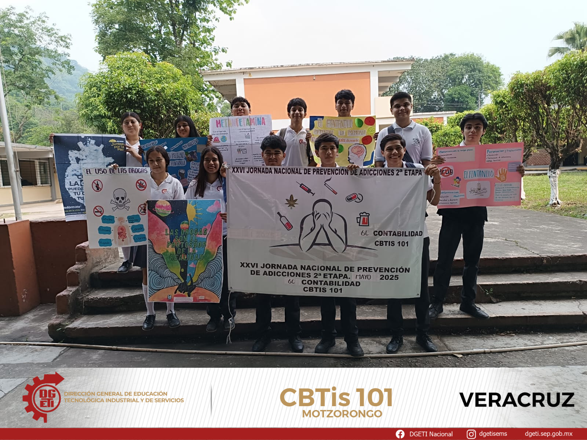

Noticias Recientes Del Cbtis 101
Aquí puedes encontrar las noticias más recientes del Cbtis 101 Guadalupe Victoria
Cómo parte de la semana nacional de vinculación la Mtra. Eva García Montes y un grupo de alumnos de VI semestre de la especialidad de contabilidad realizaron una visita a la Esc. Sec. Tec. No. 57, para extender el mensaje "El fentanilo te mata, vive feliz, alejate de las drogas"
Del 19 al 23 de mayo se efectuó la Semana Nacional de Vinculación que en esta ocasión se tituló "Construyendo mi futuro hoy", se programaron conferencias presenciales y en línea, contando con la participación de instituciones públicas y privadas como El Instituto de Estudios Superiores de la Red Iberoamericana de Academias de Investigación que nos apoyó con los temas "Hábitos de estudio y proyecto de vida" impartido por la Dra. Ventura del Carmen Maldonado García y el Dr. Elihut Armando Martínez Reyes quien explicó las "Herramientas metodológicas y actitudinales para el ejercicio profesional", participó la Doctorante Ariadna Bernal Córdova, del CETIS 164, quién presentó del tema "La inteligencia artificial para el bienestar social", la MC. Laura Roque Maciel de CONAFOR, expuso el tema "Cuido el medio ambiente, me cuido yo", por su parte el maestro Ulises López Recillas de la Casa de Cultura de Tezonapa, habló sobre el tema "El arte, una alternativa para alejarse de las drogas", por su parte la Ing. María del Rosario Recillas Rojas, del Ingenio Central Motzorongo, conversó el tema "Importancia del control de calidad en la fabricación de azúcar estandar". Se efectuaron otras actividades como proyección de películas, exposiciones y talleres, de esta manera se coadyuda al desarrollo integral del alumno. nacional de vinculación que en esta ocasión se tituló
El dia 28 de mayo se hizo una actividad en la explanada del cbtis 101,sobre la estrategia Nacional de Vida Saludable"vive saludale,vive feliz",Aguas de diferentes frutas

JORNADA NACIONAL POR LA PAZ Y CONTRA LA ADICCIONES "EL FENTANILO TE MATA" GRACIAS A CONTROL ESCOLAR DEL CBTIS 101 Motzorongo POR HACER POR COORDINAR EL EVENTO
UAC 'S
Explora nuestras materias y recursos de aprendizaje.
MECANICA INDUSTRIALLa especialidad de Mecánica Industrial en un CBTis (Centro de Bachillerato Tecnológico Industrial y de Servicios) puede proporcionar a los estudiantes habilidades y conocimientos técnicos en el área de la mecánica y la industria. Algunos beneficios de esta especialidad incluyen:
1. Desarrollo de habilidades prácticas: Los estudiantes aprenden a realizar mantenimiento, reparación y fabricación de piezas y equipos industriales.
2. Conocimientos en mecánica: Estudian principios de mecánica, materiales, procesos de fabricación y sistemas mecánicos.
3. Aplicaciones industriales: Aprenden a aplicar sus conocimientos en entornos industriales, como fábricas, talleres y empresas de servicios.
4. Oportunidades laborales: Los egresados pueden trabajar en industrias como manufactura, automotriz, aeroespacial, entre otras.
5. Preparación para la educación superior: La especialidad puede servir como base para estudios superiores en ingeniería mecánica, industrial o áreas relacionadas.
CONTABILIDAD:La especialidad de Contabilidad en un CBTis (Centro de Bachillerato Tecnológico Industrial y de Servicios) puede proporcionar a los estudiantes habilidades y conocimientos técnicos en el área de la contabilidad y las finanzas. Algunos beneficios de esta especialidad incluyen:
1. Desarrollo de habilidades contables: Los estudiantes aprenden a registrar, clasificar y analizar transacciones financieras, preparar estados financieros y realizar análisis de costos.
2. Conocimientos en finanzas: Estudian principios de finanzas, gestión de recursos financieros y toma de decisiones financieras.
3. Aplicaciones prácticas: Aprenden a aplicar sus conocimientos en entornos reales, como empresas y organizaciones.
4. Oportunidades laborales: Los egresados pueden trabajar en áreas como: - Contabilidad y finanzas en empresas y organizaciones. - Auditoría y consultoría. - Gestión de recursos financieros. - Análisis de costos y presupuestos.
5. Preparación para la educación superior: La especialidad puede servir como base para estudios superiores en contabilidad, finanzas, administración de empresas o áreas relacionadas.
ANALISIS CLINICOS:La especialidad de Análisis Clínicos en un CBTis (Centro de Bachillerato Tecnológico Industrial y de Servicios) puede proporcionar a los estudiantes habilidades y conocimientos técnicos en el área de la salud y los análisis clínicos. Algunos beneficios de esta especialidad incluyen:
1. Desarrollo de habilidades prácticas: Los estudiantes aprenden a realizar análisis clínicos, procesar muestras biológicas y utilizar equipos de laboratorio.
2. Conocimientos en ciencias de la salud: Estudian principios de biología, química y fisiología humana, así como técnicas de análisis clínico.
3. Aplicaciones prácticas: Aprenden a aplicar sus conocimientos en entornos reales, como laboratorios clínicos y hospitales.
4. Oportunidades laborales: Los egresados pueden trabajar en áreas como: - Laboratorios clínicos y hospitales. - Análisis de sangre y otros fluidos corporales. - Investigación biomédica. - Control de calidad en laboratorios.
5. Preparación para la educación superior: La especialidad puede servir como base para estudios superiores en ciencias de la salud, biomedicina, análisis clínicos o áreas relacionadas.
PRODUCCION DE ALIMENTOS:La especialidad de Producción Industrial de Alimentos en un CBTis (Centro de Bachillerato Tecnológico Industrial y de Servicios) puede proporcionar a los estudiantes habilidades y conocimientos técnicos en el área de la producción y procesamiento de alimentos. Algunos beneficios de esta especialidad incluyen:
1. Desarrollo de habilidades prácticas: Los estudiantes aprenden a diseñar, implementar y controlar procesos de producción de alimentos, asegurando la calidad y seguridad de los productos.
2. Conocimientos en tecnología de alimentos: Estudian principios de química, biología y física aplicados a la producción de alimentos, así como técnicas de procesamiento y conservación.
3. Aplicaciones prácticas: Aprenden a aplicar sus conocimientos en entornos reales, como plantas de procesamiento de alimentos y fábricas.
4. Oportunidades laborales: Los egresados pueden trabajar en áreas como: - Producción y procesamiento de alimentos. - Control de calidad y seguridad alimentaria. - Desarrollo de productos alimenticios. - Gestión de plantas de procesamiento de alimentos.
5. Preparación para la educación superior: La especialidad puede servir como base para estudios superiores en ingeniería de alimentos, tecnología de alimentos, ciencias de la alimentación o áreas relacionadas.
Capacitaciones para el trabajo
Consulta las capacitaciones para el trabajo con las que cuenta tu plantel.
En el cbtis 101 cuenta con una variedad de herramientas para el estudio de los alumnos en cada área cuenta con las herramienta adecuadas para el estudio y aprendizaje de los estudiantes, en la área de mecánica cuenta con herramientas, maquinaria y equipo de protección para realizar prácticas cuenta con vernier, micrómetros,flexometro, arcos y cierras, taladro, brocas, cuenta con máquinas de soldar y el torno,en el área de alimentos cuenta con una variedad de instrumentos para cocina y hornos para elaborar cualquier comida, también en el área de contabilidad cuentan con computadoras para realizar análisis de cuentas,eh les incluyen internet para cualquier investigación,en el área de análisis clínicos cuenta con un laboratorio que tiene juegos de química, microscopio entre otras cosa que les permite realizar investigaciónes muy profundas y no sólo es estudiar en el plantel hacén pausas activas para que los alumnos se distraigan de las clases realizan torneos de fútbol,voleibol,de diseño de dibujo y realizan concurso de cantó hacen festival entre otras cosa,el plantel también cuenta con una cooperativa y papaleria estás son algunos cosas que incluye el plantel de la escuela CBTIS 101 GUADALUPE VICTORIA
Contactos del cbtis 101
Numero de telefono:
2787363286